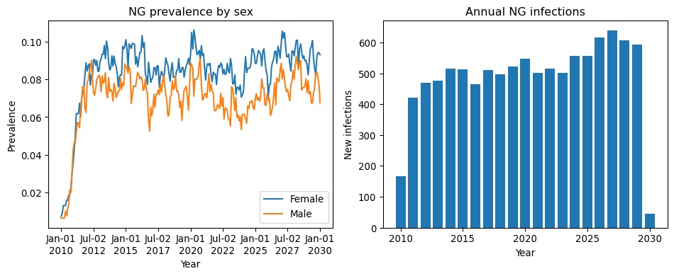

After running a sim, all results are stored in sim.results. Each disease has its own results object. You can list all available keys with sim.results.ng.keys(), or access individual results directly. STIsim stores results at multiple levels of detail: overall, by sex, and by age group.
# Access individual resultsprev = sim.results.ng.prevalenceprint(f'{prev.label}: min={prev.values.min():.3f}, mean={prev.values.mean():.3f}, max={prev.values.max():.3f}')new_inf = sim.results.ng.new_infectionsprint(f'{new_inf.label}: min={new_inf.values.min():.0f}, mean={new_inf.values.mean():.1f}, max={new_inf.values.max():.0f}')# There are many more -- including by sex and age groupprint(f'\nTotal result keys: {len(sim.results.ng.keys())}')
Prevalence: min=0.007, mean=0.077, max=0.096
New infections: min=3, mean=42.5, max=64
Total result keys: 204
Each result is an ss.Result object. The raw data is in .values (a NumPy array) and the time axis is in .timevec:
print(f'Values (first 5): {prev.values[:5]}')print(f'Timevec: {prev.timevec[0]} to {prev.timevec[-1]} ({len(prev.values)} timesteps)')
STIsim runs with monthly timesteps by default, but you’ll often want annual results for reporting or comparison with data. Use the resample() method on any result:
# Monthly new infections (raw)monthly = sim.results.ng.new_infectionsprint(f'Monthly: {len(monthly.values)} timesteps')# Resample to annual (sums monthly counts)annual = monthly.resample('year')print(f'Annual: {len(annual)} years')print(annual)
Monthly: 241 timesteps
Annual: 21 years
Result(Gonorrhea.new_infections: min=45, mean=487.238, max=639)
The resample() method automatically chooses the right aggregation: sum for counts (like new_infections) and mean for rates/proportions (like prevalence). You can also resample to a DataFrame:
For publication-quality figures or custom layouts, use the result values directly with Matplotlib:
fig, axes = plt.subplots(1, 2, figsize=(10, 4))# Left: prevalence by sexaxes[0].plot(sim.timevec, sim.results.ng.prevalence_f, label='Female')axes[0].plot(sim.timevec, sim.results.ng.prevalence_m, label='Male')axes[0].set_xlabel('Year')axes[0].set_ylabel('Prevalence')axes[0].set_title('NG prevalence by sex')axes[0].legend()# Right: annual new infections (resampled)annual_inf = sim.results.ng.new_infections.resample('year', use_years=True)axes[1].bar(annual_inf.timevec, annual_inf.values)axes[1].set_xlabel('Year')axes[1].set_ylabel('New infections')axes[1].set_title('Annual NG infections')plt.tight_layout()fig

## Custom results
STIsim’s built-in results cover the most common quantities (prevalence, incidence, counts by sex and age group). But you’ll often need something specific to your analysis – coinfection prevalence in a subgroup, treatment coverage by pathway, network contact rates, etc.
Any module can define custom results: analyzers, interventions, networks, connectors, and diseases all use the same define_results pattern. The result then automatically appears in sim.results, sim.to_df(), and sim.plot() – and can be used as a calibration target.
Here’s a minimal example using an analyzer that tracks gonorrhea prevalence among people aged 15-24:
import starsim as ssclass YouthPrev(ss.Analyzer):"""Track gonorrhea prevalence among 15-24 year olds."""def init_pre(self, sim):super().init_pre(sim)# define_results registers a result with the sim's results system.# After sim.run(), it appears in sim.results.youthprev.ng_prev_15_24# and in sim.to_df() as 'youthprev.ng_prev_15_24'.self.define_results( ss.Result('ng_prev_15_24', dtype=float, scale=False, label='NG prev (15-24)'), )def step(self): ppl =self.sim.people youth = (ppl.age >=15) & (ppl.age <25) # Boolean mask for 15-24 year olds n_youth = youth.count() # How many are in this groupif n_youth >0: infected =self.sim.diseases.ng.infected # Boolean: who is infected prev = (infected & youth).count() / n_youth # Prevalence = infected / totalself.results['ng_prev_15_24'][self.ti] = prev
How it works:
init_pre is called during sim.init(). Call self.define_results(...) to register your results. Each ss.Result gets a pre-allocated array matching the simulation’s number of timesteps. The result is stored under sim.results.<module_name>.<result_name> – in this case, sim.results.youthprev.ng_prev_15_24.
step is called every timestep. Access the sim via self.sim, compute your quantity, and store it in self.results[name][self.ti] where self.ti is the current timestep index.
After sim.run(), the result is available everywhere: sim.results, sim.to_df(), sim.plot(), and as a calibration target (see Calibration tutorial).
This same pattern works in any module – interventions, connectors, networks, etc. Anywhere you can write define_results in init_pre and self.results[name][self.ti] = value in step, you get a tracked result.
# Run a sim with our custom analyzersim = sti.Sim(diseases='ng', n_agents=2000, start=2010, stop=2030, analyzers=[YouthPrev()])sim.run(verbose=0)# The result is now accessible like any built-in resultprint(sim.results.youthprev.ng_prev_15_24)# And it shows up in to_df()df = sim.to_df(resample='year', use_years=True, sep='.')print(df[['timevec', 'youthprev.ng_prev_15_24']].head())
Run a sim with both 'ng' and 'ct'. Use sim.plot(key=...) to compare the prevalence of the two diseases on the same figure.
Export the annual new infections for gonorrhea to a DataFrame and save it to a CSV file.
Make a Matplotlib figure that plots monthly symptomatic prevalence (ng.symp_prevalence) alongside total prevalence (ng.prevalence). What fraction of infections are symptomatic?
Write an analyzer that tracks the number of symptomatic gonorrhea cases in males aged 25-49. Run the sim with it and verify the result appears in sim.to_df().